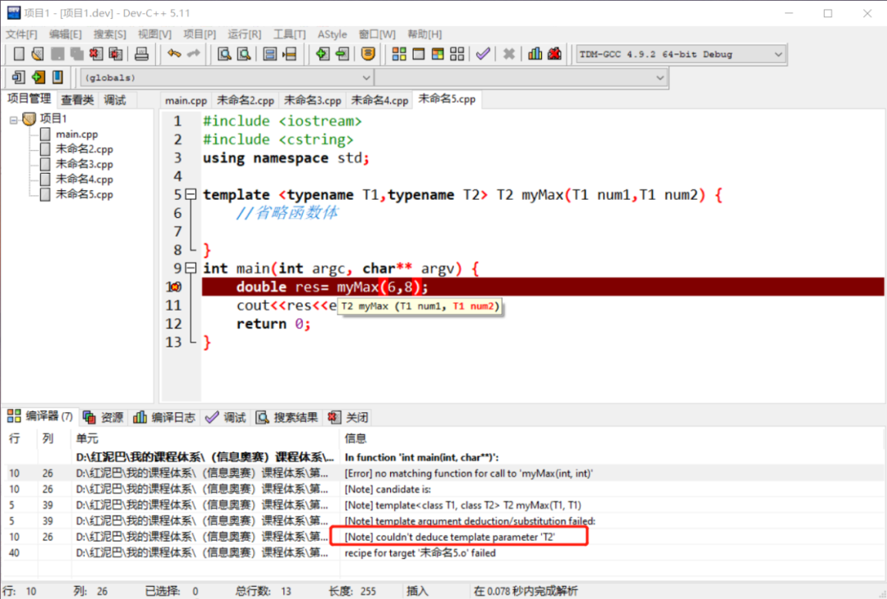
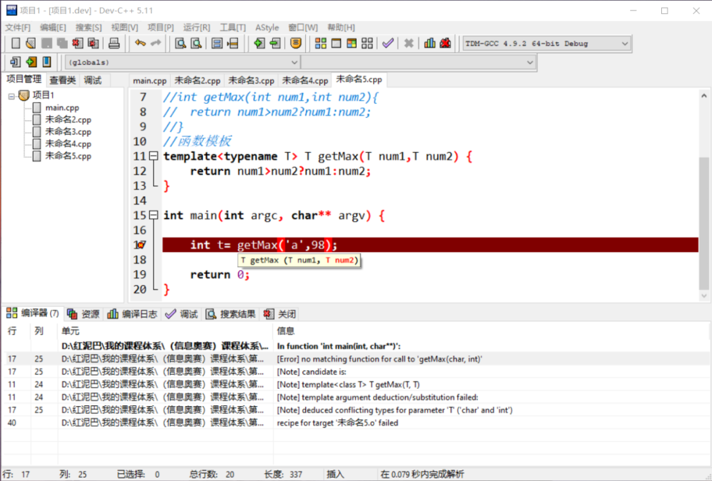

C++ 初识函数模板
1. 前言
什么是函数模板？
理解什么是函数模板，须先搞清楚为什么需要函数模板。
如果现在有一个需求，要求编写一个求 2 个数字中最小数字的函数，这 2 个数字可以是 int类型，可以是 float 类型，可以是所有可以进行比较的数据类型……
常规编写方案：针对不同的数据类型编写不同的函数。
#include <iostream>
using namespace std;
//针对 int 类型
int getMin(int num1,int num2) {
return num1>num2?num2:num1;
}
//针对 float 类型
float getMin(float num1,float num2) {
return num1>num2?num2:num1;
}
//针对 double 类型
double getMin(double num1,double num2) {
return num1>num2?num2:num1;
}
int main() {
//整型数据比较
int min=getMin(10,4);
cout<<min<<endl;
//float 类型数据比较
float minf=getMin(3.8f,2.9f);
cout<<minf<<endl;
//double 类型数据比较
double mind=getMin(1.8,2.1);
cout<<mind<<endl;
return 0;
}
重载函数（当然上述几个函数名也可以不相同）可以解决这个问题。显然，上述 3 个函数的算法逻辑是一模一样的，仅是函数的参数类型不一样。既然函数的形式参数可以接受值不同的同类型数据，能否把函数形参的数据类型也参数化，用来接受不同的数据类型。
函数模板实质就是参数化数据类型，称这种编程模式为数据类型泛化编程。
Tips： 泛化的意思是一般化、抽象化，先不明确指定，需要时再指定。
如：我对班长说，我需要
一名学生帮我搬课桌。这名学生到底是谁，我没有明确，由班长具体化。换在函数模板中，表示函数模板需要一种数据类型的数据，具体是什么数据类型，由使用者决定。
2. 初识函数模板
2.1 语法
在重构上述代码时，先了解一下函数模板的语法结构：
语法结构说明：
-
template关键字说明了此函数是一个函数模板。 -
template <>的尖括号里是模板参数列表，也可称此处的参数为数据类型参数，用来对函数算法所针对的数据类型的泛化，表示可以接受不同的数据类型。
Tips：
模板参数列表中的参数可以是一个或多个泛化数据类型参数，也可以是一个或多个具体数据类型参数。泛化类型参数前面要加上
typename关键字。
- 后面便是函数的一般性说明，只是在函数中可以使用
模板数据类型参数。
Tips： 函数模板中有
2类参数，模板参数和函数参数。
使用函数模板重构上面求最小值的代码：
说明：
typename T声明了一个数据类型参数，用于泛化任一种数据类型，或者说T可以表示任意一种数据类型。
Tips：
typename 是 C++11 标准，也可以使用class关键字，但建议不用，避免和类定义混淆。
T数据类型可以作为函数的参数类型、返回值类型、以及作为算法实施过程中临时变量的数据类型。
Tips：
T是一个变量标识符，在遵循变量命名规则的前提下，可以起任意名称。
2.2 实例化
函数模板如现实生活中制作陶瓷的模具一样，只有往模具中注入原材料，才能生成可实用的陶瓷。函数模板不是函数，仅是一个模板，不能直接调用，需要实例化后才能调用。
实例化：指编译器根据开发者对函数模板注入的具体（实参）数据类型构造出一个真正的函数实体（实例），这个过程由编译器自动完成，且实例化的函数对于开发者不可见。
如上，编译器通过函数模板<>内的int数据类型，实例化的函数可以对 int类型的数据进行算法操作。同理，下面的代码会让编译器实例化针对不同数据类型的数据进行算法操作的函数。
//实例化原型为 float getMin(float num1,float num2){函数体} 的函数
float resf=getMin<float>(3.2f,8.2f);
cout<<resf<<endl;
//实例化原型为 double getMin(double num1,double num2){函数体} 的函数
double resd=getMin<double>(1.2,0.2);
cout<<resd<<endl;
//实例化原型为 char getMin(char num1,char num2){函数体} 的函数
char resc=getMin<char>('A','B');
cout<<resc<<endl;
//输出结果分别为 3.2f 0.2 A
使用函数模板的优点不言而喻，声明一次，便可以实现针对不同数据类型的数据的操作。当然，中间会有匹配、实例化的代价。
Tips：高级业务层面的一劳永逸往往会以牺牲底层的性能为代价，但是，这是值得的。
除了通过显示声明数据类型提示编译器实例化，也可以使用函数指针实例化。
说明：
-
1处先定义一个函数指针类型。 -
2处这行代码，千万不要理解是取函数模板的地址，编译器在底层做了相应处理。
编译器会根据函数指针类型说明先实例化一个函数。
再取实例化函数的内存地址，并赋值给 pf。
3处以函数指针方式调用函数。
实例化时要注意的几个问题：
- 实例化时，可能会有一个直观问题：真的能指定任意一种数据类型实例化函数模板吗？
答案是：任何高级层面的逻辑行为都不能脱离基础知识的认知范畴，不同的数据类型有着语法系统赋予它的运算操作能力，当指定一个不支持函数模板内部算法操作的数据类型时，必然会出错。
如声明一个求 2 个数字相除的余数的函数模板。
如果指定 double 数据类型实例化 getYuShu 函数模板时，就会抛出错误，因为 double数据类型不能使用 %运算符。
Tips： 编译器在实例化函数模板时，会遵循
语法标准检查给定的数据类型是否支持函数模板中的运算操作。
编译器实例化的时机。
常规而言，编译器会在程序中第一次需要函数模板的某个实例时对其进行编译。但是，同一份代码中，可能会出现对同一个实例多次调用的需要，如下面的代码：
template <typename T > test(T num) {
return num;
}
int f() {
int res= test<int>(12);
return res;
}
double f1() {
int res= test<int>(24);
return double(res);
}
f和f1函数都需要使用 test<int>实例，于编译器而，无法知道 f和f1函数谁先会被调用（也就无法确定第一次编译的时间点），但为了保证编译期间完成实例化工作，早期C++编译器采用对同一实例每一次出现的地方都编译的策略，然后从多个编译结果中选一个作为最终结果，显然，编译时间会大大延长。
C++充许显式实例化声明，用来显示指定某一个函数模板的实例化的时间点，从而解决同一个实例被多次编译的问题。其语法如下：
针对上述函数模板可以编写如下代码，告之编译器编译时间点。
Tips： 显示声明只对一个源文件有效。
2.3 实参推导
所谓实参推导，在使用函数模板时省略<>，不明确指定数据类型参数，而是由编译器根据函数的实参类型自动推导出类型参数的真正类型。如下代码：
实参是int 类型， 编译器由此推导出 T 是 int类型，从而使用 int类型实例化函数模板，类似于下面的显示声明代码：
实参推导可以像调用普通函数一样使用函数模板。但是实参推导是有前提条件的：函数参数使用了类型参数的才能通过函数实参类型推导。如下的函数模板。
因为 T2是作为函数模板的返回类型，是无法通过实参类型推导出来的。如下图所示：

使用如上函数模板，需要显示指定具体的数据类型。
是否可以让函数模板的类型参数一部分显示指定，一部分由实参推导？
答案是可以，但是，要求在声明函数模板时，把需要显示指定的类型参数放在前面，可由实参推导的参数类型放在后面。把上面的函数模板的 T1、T2参数说明交换位置。
实例化时，只需要显示指定 T2的类型，T1类型由编译器根据实参推导。如下代码可正确调用。
编译器把 T2指定为 double类型，然后根据实参6和8推导出 T1是 int类型。
了解什么是实参推导后，使用时，需要知道实参推导是不支持自动类型转换的。如下代码是错误的。
编译器认定实参 4是int类型，实参7.5是 double类型，那么是到底是使用 int 类型还是使用 double类型实例化 getMin 函数模板，会让编译器不知所措、左右为难。
Tips： 即使支持自动类型转换，于编译器而言也无法知道开发者是想使用
int类型还是double类型。如此自动类型转换没有存在的意义。
对于上述问题可以采用如下几种方案解决：
- 通过
强制类型操作把实参转换成统一数据类型。
int res=getMin(4,int(7.5));
或者
int res=getMin(double(4),7.5);
```
- 显示指定实例化时的数据类型。
```cpp
int res=getMin<int>(4,7.5);
//或者
int res=getMin<double>(4,7.5);
```
- 如果有必要传递 `2` 个不同类型的参数，可需要修改函数模板，使其能接受 `2` 种类型参数。
```cpp
template<typename T1,typename T2> T1 getMin(T1 num1,T2 num2){
return num1>num2?num2:num1;
}
```
## 3. 重载函数模板
`C++`中普通函数和函数模板可以一起重载，面对多个重载函数，编译器需要提供相应的匹配策略。如下代码：
```cpp
//普通函数
int getMax(int num1,int num2){
return num1>num2?num1:num2;
}
//函数模板
template<typename T> T getMax(T num1,T num2) {
return num1>num2?num1:num2;
}
如下调用时，编译器是选择普通函数还是函数模板？
函数实参是 int类型，相比较函数模板，普通函数不需要实例化可直接使用，编译器会优先选择普通函数。但是如下的调用，编译器会选择函数模板。
getMax(2.4,6.8); //调用 getMax<double>(实参推导)
getMax('a','b'); //调用 getMax<char>(实参推导)
getMax<>(7,3) //调用 getMax<int> (实参推导)
getMax<double>(4,9) //显示指定
编译器选择函数模板的原则：
- 如果函数模板能实例出一个完全与函数实参类型相匹配的函数，那么就会选择函数模板，如
getMax(2.4,6.8);调用。编译器会根据函数模板实例化一个double getMax(double a,double b)函数与需求完全相匹配的函数。 - 如果即想使用实参推导，且想使用函数模板而非普通函数，可以使用空
<>尖括号语法。如上的getMax<>(7,7);调用。一旦指定<>标识符，显示指定使用函数模板，无论其中是否有实参类型说明。
如下的函数调用，实参有 2 个，但 2者之间可以发生自动类型转换。
char和int之间可以相互转换。
编译器会选择谁？可以做一个实验，把普通函数注释，保留函数模板。
#include <iostream>
#include <cstring>
using namespace std;
//函数模板
template<typename T> T getMax(T num1,T num2) {
return num1>num2?num1:num2;
}
int main(int argc, char** argv) {
int t= getMax('a',98)
return 0;
}
执行后：

再恢复普通函数后执行，代码可以正常执行。显然，编译器选择的是普通函数。原因很简单，在使用实参推导时，函数模板是不支持自动类型转换，而普通函数表示没有压力。
总结一下，选择时，编译器会先考虑有没有类型完全相匹配的普通函数，没有，试着看能不能实例化一个完全匹配的函数。
4. 总结
本文讲到了函数模板的语法、实例化和重载 3 个方面的内容，除此之外，函数模板还有其它高级应用，受限于篇幅，本文仅抛砖引玉，有兴趣者可以查阅相关文档了解更多。